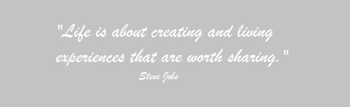

Otázka, ktorá mi zmenila život
Ladies and gentlemen, pripravte si popcorn a dobrú kávu, pretože toto je môj prvý a zároveň aj veľmi rozsiahly článok, ktorý sa stručnejšie napísať nedal. 😅
15. júl 2022, piatok a ja ako každý iný deň som šla do práce. Tentokrát však s úplne iným pocitom. Bol predsa PIATOK, prakticky začiatok víkendu a v našom meste boli dokonca aj mestské trhy, na ktoré som sa už veľmi tešila. Atmosféru týchto trhov som milovala už ako malá, no za posledných pár rokov som nemala možnosť sa ich zúčastniť. V práci nám dokonca oznámili, že vzhľadom na ich konanie, nás púšťajú o dve hodiny skôr a tak som teda mala o dôvod naviac pre radosť.
Ako každé ráno, aj tento deň som začala svojím rituálom. Zapla som si počítač, napúšťala vodu do kanvice a dala zohriať, pripravila si raňajky a kým sa mi naštartoval počítač, prebehla som niekoľko dôležitých spisov s mojou asistentkou. Následne sme mali vždy ešte pár minút naviac, aby sme sa kľudne najedli a porozprávali o našich plánoch na víkend a podobne. Presne si pamätám na tento deň akoby sa odohral len včera.
Bol to v podstatne úplne bežný deň s neúplne bežným koncom. Predtým ako Ti to rozpíšem, mám na teba otázku.
Zamýšľal si sa niekedy nad tým, že niektorí ľudia prídu do tvojho života pre nejaký dôvod? Že jednoducho všetko čo sa nám deje v našich životoch má nejaký hlbší zmysel a len časom zistíme aký? Ja sa nad tým zamýšľam intenzívne posledných pár mesiacov a som doslova vďačná za každú moju skúsenosť, či už dobrú alebo zlú, ktorá ma jednoducho niekam posunula.


Ako som už písala, piatok začal úplne stereotypne. S mojou kolegyňou sme rozoberali typické raňajkové témy ako plány na víkend a samozrejme zároveň sme plánovali kto, ako a kedy pôjdeme na trhy. Ja som si potom pridala moje typické ranné storýčko s hashtagom TGIF a následne sme šli pracovať. Pamätám si, že to bolo také to hluché obdobie, kedy sú ľudia prevažne na dovolenkách, nápad na súdoch je podstatne nižší a tak som nemala až tak veľa práce. Každopádne ja som bola z tých úradníčok, čo sa snažila mať takmer vždy prázdny stôl a preto spisy u mňa nestáli dlhú dobu a tak som popritom niekedy mala aj viac času na oddych. Podotýkam, že v tom čase som mala nad sebou dvoch poručenských sudcov (to sú sudcovia s rodinnoprávnou agendou, ktorá je najpracnejšia) a boli aj dni, kedy som šla bez jedinej prestávky (áno aj bez tej obedňajšej), a to najmä preto, že jeden z mojich sudcov ma naučil sa pozerať na spis nie ako na hromadu papierov, ale ako na osudy ľudí, ktorí doma trpnú, stresujú a len čakajú na to, kedy ich spor konečne skončí.
Medzičasom ako som si listovala v jednom spise, sa mi ozval kamarát. Reagoval na môj príbeh, a tak sme začali komunikovať. Klasika – ahoj, ako sa máš, aký máš deň a podobne, no s tým rozdielom, že v tomto prípade konverzácia začala mať aj nejaký ten flow. Nemôžem ani povedať, že išlo o kamaráta, ale skôr o známeho, s ktorým som sa stretla tak 2-krát v živote a viac-menej sme boli len sporadicky v kontakte.
Začali sme spolu riešiť naše životy. Vlastne ani neviem prečo, keďže ja som skôr typ človeka, čo si veľmi dáva pozor na to, čo zo svojho súkromia prezradí a obzvlášť komu. Som presne ten typ človeka, čo nedôveruje hocikomu a prv musím osobu lepšie spoznať na to, aby som si ju vôbec pripustila do života.
Táto osoba nebola zo Slovenska a tak jej mentalita a pohľad na život bol úplne odlišný od toho nášho typického konzervatívneho. Väčšina z nás Slovákov sme proste takí, že sa ťažko prispôsobujeme zmenám, ktoré prichádzajú zo zahraničia a sme skôr verní naším tradíciám (čo nehovorím, že je zlé, no niektoré zmeny naozaj nie sú na škodu).
Potom ako sme rozobrali zopár tém, sa ma napokon opýtal otázku, ktorá mi zmenila život o 180°, a to DOSLOVA. Opýtal sa ma, že
ak by som si mohla vybrať akékoľvek zamestnanie na svete, aké by to bolo? V skutočnosti ani neviem prečo ma táto otázka tak veľmi zaskočila. Bežne som bola zvyknutá na to, že sa ma ľudia pýtali, prečo som sa rozhodla študovať právo a na túto otázku som mala aj vždy jasnú odpoveď. “Pretože už ako malá som vždy hovorila, že raz keď vyrastiem nahradím Dzurindu. (áno vážne som to ako malá krpaňa hovorila 😑)” Následne som vždy vysvetlila, že právo ma svojim spôsobom vždy lákalo, bolo pre mňa niečím zaujímavé a že si nemyslím, že iný odbor na výške by ma bavil rovnako. V rodine sme nemali žiadneho právnika a tak som nemala predtým ani poňatia čo toto povolanie vlastne obnáša. Ak mám byť ale úprimná, stále som sa hľadala a možno sa aj stále hľadám a ktovie možno nakoniec skončím opäť na Slovensku a budem pokračovať v právnickej oblasti. Človek nikdy nevie, kde ho osud zavedie.
Čo sa však ale týka tej otázky, naozaj som na ňu nevedela odpovedať. Asi niekoľko minút som sa snažila niečo napísať, čo som následne ešte pred odoslaním aj tak vymazala. Napokon som odpísala, že si neviem predstaviť robiť niečo iné ako právo, a to už len vzhľadom na to, čím všetkým som si musela prejsť (najmä tie stresy počas vysokej školy s vyvrcholením počas štátnic, kedy sa to trochu odrazilo aj na zdraví).
Nenechalo ma to a aj naďalej som uvažovala nad tým, čo iné by ma ešte bavilo. Wualá chvíľku na to som si spomenula na detstvo. Úplne sa mi vynorili spomienky ako som sa hrala na módnu návrhárku, kreslila si rôzne modely a z čipkovanej záclony som si skladala svadobné šaty. Vždy som snívala o tom, ako raz budem mať svoju značku oblečenia, ktorá bude známa aj za hranicami Slovenska. Čo je ale vtipné, túto myšlienku, len trochu skromnejšiu, som mala aj v čase, keď som nastupovala na súd. Úplne som na to zabudla. Pamätám si ako ma prijali, ja som mala nastúpiť do práce a deň predtým som začala v mojom šatníku triediť oblečenie na elegantné a vhodné pre moje povolanie a to, ktoré je vhodné len na bežné nosenie. Hádajte čo! V celom šatníku som našla asi 3 ks šiat, 1 nohavice a 2 blúzky. Nasledujúce dni som každé svoje poobedie strávila na internete hľadaním elegantných kúskov, ktoré by nepôsobili ako pre staršie dámy, ktoré by boli vkusné, trochu sexy a stále za prijateľnú cenu. Samozrejme som nič, čo by spĺňalo všetky moje požiadavky nenašla, a tak som dostala myšlienku, že si to oblečenie navrhnem sama a dám si ho ušiť, prípadne si aj sama ušijem. Seriózne som si nakúpila látky, knihy, šijacie potreby a nakreslila zopár návrhov modelov. Šitie so strojom mi teda vôbec nešlo 😅, a tak som pristúpila k plánu B, a to nájsť niekoho kto to za mňa ušije. Aby som to zbytočne veľmi nerozvádzala, tak v skratke zhrniem čo sa stalo.
Keďže som na súd nastúpila v roku 2020, kedy sa v podstate korona rozbiehala, firma, s ktorou som chcela spolupracovať skrachovala, ceny látok išli nekontrolovateľne hore (ako aj všetko ostatné) a tak moje návrhy poputovali do koša 🙂 .
Čo som ale chcela povedať je, že jeho otázka ma prinútila uvažovať nad tým, či práca vyššej súdnej úradníčky je naozaj to, čo chcem.
Či sa mi oplatí čakať do 30-tky, aby som sa mohla stať sudkyňou a dovtedy poberať len smiešny plat, ktorý bol síce vyšší ako minimálna mzda, avšak nebolo to nič závideniahodné.

Čas v práci mi v ten deň ubehol naozaj rýchlo (predsalen sme končili už o jednej) a mne konečne začal víkend. S jedným z mojich kolegov sme teda natešení smerovali rovno do prvého stánku na pivo (ostatní museli ešte dopojednávať a tak prišli postupne). Nie som pivár, ale boli to jeho kamoši, čo ho vyrábali, tak som im chcela dať šancu, veď nie je pivo ako pivo (teda možno pre pivára, pretože u mňa to opäť nevyhralo😶). Môj kolega dostal ešte bláznivejší nápad a objednal k tomu dve marhuľovice. Seriózne vživote som ešte nezapíjala tvrdé s pivom, a to som z východu!!! 😅 Ale poviem vám, bol to naozaj zlý nápad a už nikdy takúto chybu opäť nespravím hahaha.

S kolegom som mala naozaj dobrý vzťah, vedela som, že sa mu môžem zveriť s kadečím a že môžem od neho očakávať rozumnú radu bez toho, aby ma začal hneď súdiť. On vedel, čo sa deje v mojom živote, a teda, že v skutočnosti to len hrám aká som šťastná, avšak môj osobný život bol celkom v ruinách. Spomenula som mu túto otázku, ktorú som dnes dostala a že mi z nejakého dôvodu uviazla v hlave a stále sa k nej vraciam. Môj v tom čase ešte kolega je veľmi spontánny človek, za každú srandu a pokiaľ môže, tak ten život si užíva naplno. Spomenula som mu, že
ja som si vlastne uvedomila, že celý život robím rozhodnutia podľa druhých, vždy ma to ťahalo do zahraničia a reálne som skončila ako pracovníčka na súde za možno 1/3 platu oproti tomu, čo by som zarobila v cudzine. Opäť nejdem zachádzať do detailov, pretože to by bolo tak na ďalší jeden blog, ale
v tomto okamihu som prvýkrát prijala myšlienku, že končím, nabrala som entuziazmus a rozhodla sa, že si nájdem prácu v zahraničí, že jednoducho odídem zo Slovenska.
Deň 2, sobota a
ja sa prebúdzam po vybláznenej noci rovno
s myšlienkou ako zmeniť svoj život a či je správne rozhodnutie odísť zo Slovenska, odísť z práce a v podstate zanechať 5 rokov štúdia a začať opäť od nuly.
Celý deň som, okrem bojovania s opicou (hahaha),
rozmýšľala nad prácou aká by ma naozaj napĺňala a dala by mi všetko to, po čom som vždy túžila, a to je život vo veľkomeste, nadpriemerné finančné ohodnotenie, kolektív open-minded ľudí a hlavne kopec možností, ako je cestovanie, spoznávanie nových kultúr, skúšanie rôznych atrakcií a podobne.
Prvé k čomu som smerovala bola práca návrhárky a hneď som našla aj riešenie. Keďže jedna z mojich najlepších kamarátok je už dlhodobo v Sydney, kde najprv študovala a momentálne pracuje ako fitness trénerka, videla som, že ten život tam je úplne o niečom inom. Hneď sme sa skontaktovali a hľadali možnosti ako dosiahnuť môj cieľ. Netrvalo dlho a našli sme školu dizajnérstva, ktorá by mi umožnila
získať víza a odísť do Austrálie, avšak malo to aj svoje negatíva. Vtedy som mala 26 rokov. Na to, aby som začala normálne žiť a nie len prežívať by som musela vyštudovať školu, ktorá by trvala aj 3 roky a popri nej by som si musela nájsť prácu, možno aj dve, aby som to finančne utiahla (a to vám stále negarantuje, že ten život nebude opäť len o prežívaní). Predsa len život v Sydney nie je úplne med lízať a len obyčajné obedové menu vás vyjde aj na viac ako 20 eur.
ˇ
Tak som teda hľadala možnosť číslo 2. Pýtala som sa sama seba, čo by mi umožnilo odísť zo Slovenska, cestovať a zarábať pekné peniažky? Vtedy ma zrazu osvietilo, že
veď jasnééééé práca letuškyyyyy. V mojich očiach to bolo vždy veľmi lukratívne povolanie a doslova som v dobrom závidela, ak som videla, že niekto má túto prácu snov. Nebolo to prvýkrát, čo som nad tým uvažovala, dokonca v mojich 23 rokoch som sa skoro prihlásila na open day pre jednu z top aeroliniek vo svete, avšak následne som dostala výčitky svedomia, že nemôžem len tak odísť, zanechať štúdium a očakávať od vtedajšieho priateľa, že bude akceptovať takýto vzťah na diaľku. Bolo to pre mňa ako zakázaná zóna, tabu, uzavretá kapitola s nikdy nedosiahnuteľným snom. Ale čo teraz? Zrazu som bola slobodná, vyštudovaná, okrem hypotéky na byt, ma tu viac nič nedržalo.
Toto bol okamih kedy som si povedala, že idem do toho a akonáhle vyhlásia výberové konania, tak sa naň rovno aj prihlásim. Potrebovala som ale istotu, že robím správne rozhodnutie, a tak som to celé ešte prebrala s mojou najväčšou oporou v mojom živote – mojom sestrou 💓.
Nika samozrejme vedela, čím si prechádzam, že mám jedno z ťažších období a že jednoducho potrebujem zmenu. Čo ma ale prekvapilo bolo, že mi povedala, že vie, že som vždy chcela ísť do zahraničia a že mám jednoducho robiť rozhodnutia tak, ako to cítim ja, že nemám myslieť na to, ako zareaguje okolie, že pokiaľ to neskúsim, nezistím, či budem takto šťastná. Povedala, že aj keby to nevyšlo, tak sa vrátim späť, že sa nič nedeje, že treba myslieť pozitívne. Toto ma uistilo, že robím správne rozhodnutie, pretože možno to aj sami poznáte, že
ak chcete niečo dosiahnuť, niečo urobiť, niekam ísť a niečo vás stopne v tejto myšlienke a svoje túžby nenaplníte, tak časom máte výčitky svedomia a pýtate sa sami seba, že prečo som to vtedy nespravila tak, ale tak. Proste nesmieme nechať strach z prehry, aby nás vyradil z hry. A týmto bolo rozhodnuté!

© 2023 Petronela Balášová. Všetky práva vyhradené. Šírenie obsahu tejto web stránky je povolené výlučne s mojím písomným súhlasom.